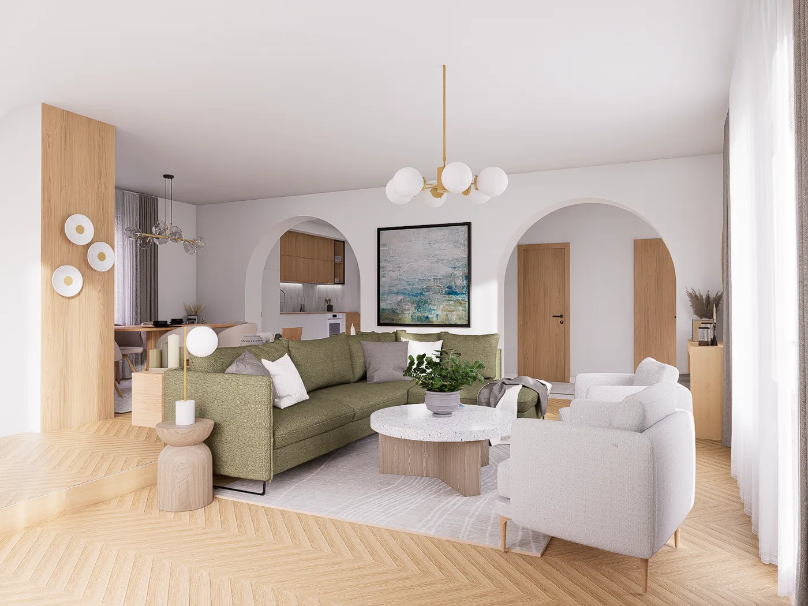

Bézses színek, finom textúrák
Egy új építésű, madárhegyi otthon amerikai konyhás nappalijának berendezésére és látványtervezésére kaptam felkérést. A cél egy világos, elegáns és harmonikus enteriőr kialakítása volt, ahol a bézses árnyalatok, a természetes hatású felületek és a finom textúrák teremtenek nyugodt, időtálló összhatást.


A tér elrendezését nagyrészt a megbízó határozott elképzelései alakították. Fontos elem volt a konyhát és az étkező zónát összekapcsoló félsziget, amely nemcsak funkcionális szerepet kapott, hanem vizuálisan is összefogja a két területet.
A tervezés egyik kihívását az jelentette, hogy az épület kivitelezése már előrehaladott állapotban volt, így a meglévő gépészeti és elektromos kiállásokon már nem lehetett változtatni. Az alapvető adottságokat megtartva kellett megtalálni azt a térszervezési megoldást, amely funkcionálisan jól működik, miközben esztétikailag is egységes enteriőrt teremt.
A kötöttségekből végül egy letisztult, jól használható tér született, amelyben a konyha, az étkező és a nappali egymással összhangban, mégis jól elkülöníthető funkcióként jelenik meg. A visszafogott színpaletta és a különböző textúrák finom rétegzése melegséget ad az enteriőrnek, miközben megőrzi annak modern, elegáns karakterét.
A végeredmény egy olyan otthon lett, amely nemcsak látványában felel meg a megbízó elképzeléseinek, hanem a mindennapi használat során is kényelmesen és természetesen működik.

Tervezzük meg az Ön otthonát is.
Az első konzultáció ingyenes és kötelezettségmentes.